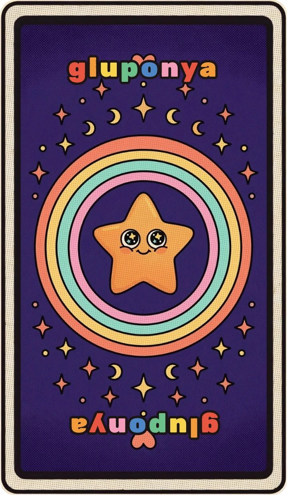
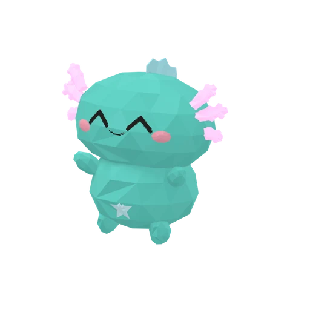

Колода таро
Карта дня за баллы канала. Своя колода по личному коду, первооткрыватели и статистика
Открыть →
Питомцы чата
Кто растёт на стриме сейчас и кто уже вырос. Корми за баллы — и, может, заберёшь его себе
Открыть →Команды чата
Все !команды и награды за баллы. Нажми на команду — она скопируется
Открыть →Профили зрителей
Титулы, карты и питомцы зрителей. Свой появится, если написать !профиль в чате
Открыть →